韓国ROM
韓国にもMSXがあるのはよく知られていますが、日本のものとは微妙に異なっていたりします。ケースも基板も日本のものとは異なります。内容も微妙に異なっています、という言い方で良いのでしょうか・・・。
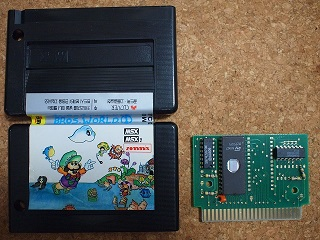
まずはClover社のSuper Bros. World 1から・・・どことなくマ○オに似ているようなゲームです。YouTubeにもプレイ動画がアップされています。
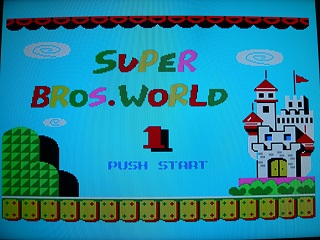
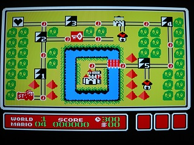
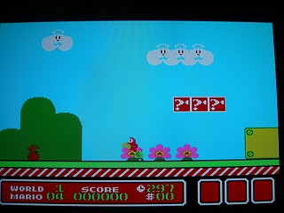
回路図にしてみるとこんな感じです。
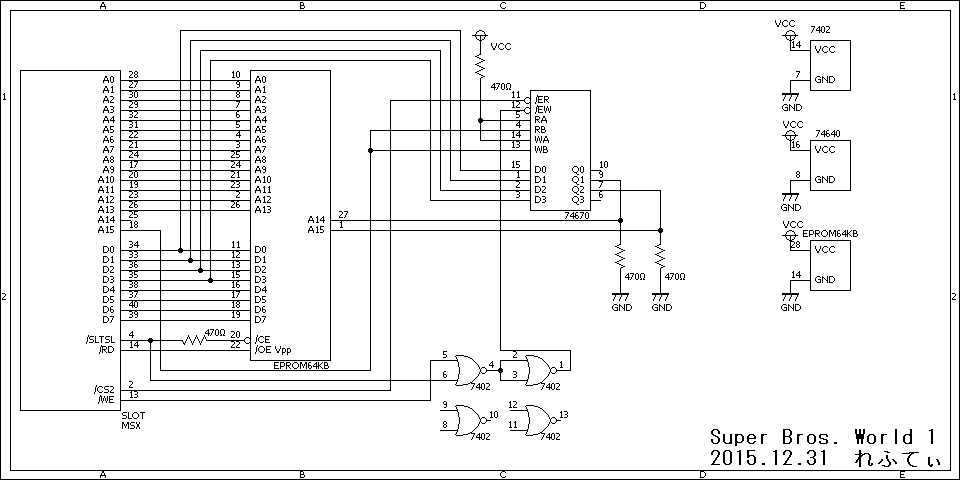
EPROMは64kBのEPROMです。64kBのROMのゲームはいわゆるメガロムではありませんが、ページ0をMAIN ROM(BIOS)、ページ3をRAM(ワークエリア)として使い、ページ1, 2にゲームROMを持ってくるためにメガロムコントローラと同様のバンク切り替えを行うことが多いようです。
このROMでは74670をバンクレジスタとして使っています。74670は4bit長のレジスタが4個あるICですが、RA/WAがHighで固定されRB/WBのA15のみで指定しているので、使えるレジスタは2個になります。さらに/ERに/CS2(8000-BFFFhの時Low)が入っており、/CS2がLowになるのはA15がHighの時だけなので実際に使われるレジスタは1個だけで、有効なのは8000-BFFFhの時だけです。つまり、8000-BFFFhへバンク番号を書き込むと、8000-BFFFhに割り当てられるバンクが切り替わります。それ以外の時の出力はハイインピーダンス状態ですが、プルダウン抵抗があるのでLowになっています。つまり4000-7FFFhは常にバンク0です。
レジスタはD3-D0の4bitですが、D2とD1のみがA15, A14につながっているので、実際に使っているのは2bitです。A13まではスロットから直接EPROMにつながっているので16kBのバンク切り替えを行っています。64kBを16kBのバンクで分割するのでA15, A14にはいるバンク番号は、2進数で00, 01, 10, 11の4つ。D2とD1にD0を加えて3bitの組み合わせで考えると000/001, 010/011, 100/101, 110/111、10進数または16進数では0か1, 2か3, 4か5, 6か7の4つになります。
実際のROMのデータを見てみますと・・・32 00とかでサーチしてみると8000hへの書き込み32 00 80（LD (8000h), A)が見つかります。また、その前に3E 02(LD A, 02h)があり、バンク番号を設定しているようです。バンク番号は0-3を単純に2倍した0, 2, 4, 6を使っているようです。
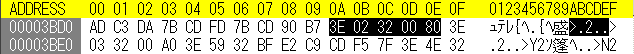
これを似非RAMやエミュレーターで動かすためには、ASCII 16kBタイプのメガコン仕様に変換する必要があります。8000-BFFFhを切り替えるためのバンクレジスタは7000-77FFhですので、32 00 80を32 00 70に書き換えます。また、バンク番号は半分(00はそのまま、02→01, 04→02, 06→03)にすれば完了です。
ところが、このROMには不思議な箇所がありました。
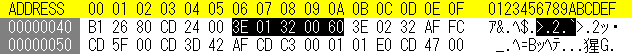
何故かバンク切り替えレジスタが有効にならない6000hへの書き込みをしています。実際には何も変化が起きないはずですが、これをそのままASCII 16kBバンクのメガロムコントローラーで使うと、4000-7FFFhがバンク1に切り替わって暴走してしまいます。よく分かりませんが、この部分、特に後ろの3バイトは00hにしてしまって良いかと思います。

もう一個、次はHELLO SOFT社のSuper Bio Man 1です。これもどことなくマ○オに似ているようなゲームです。Super Bros. World 1とは会社も基板もケースも異なりますが、ゲームは似ていたり・・・。
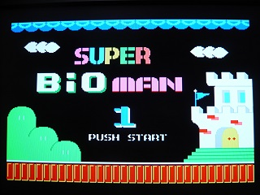
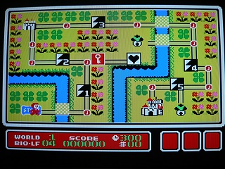
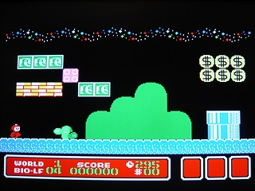
回路図にしてみるとこんな感じです。Super Bros. World 1とはずいぶん違います。
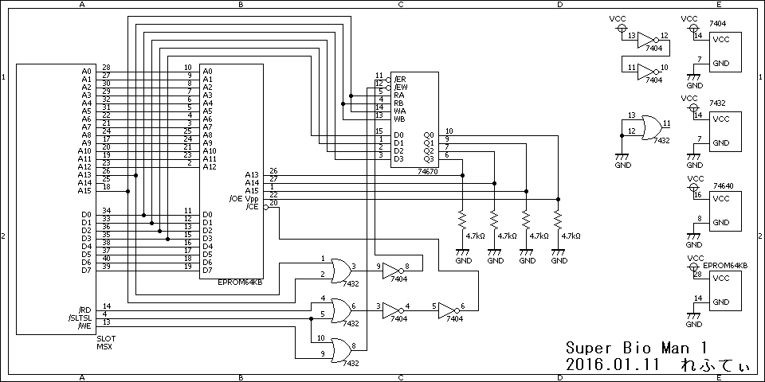
EPROMは64kBのEPROMで、74670をバンクレジスタとして使っているところはSuper Bros. World 1と同じです。
74670のRA/WA, RB/WBにA15, A13がつながっているので、バンクレジスタは4個使えそうです。しかし、/ERはA15とA13がLowの時にHighになるので、実際に使えるのは01, 10, 11の組み合わせの3個です。アドレスとしてはA15-A13の3bitの組み合わせで考えると以下の通り。
001 (001x xxxxb) = 2000 - 3FFFh
011 (011x xxxxb) = 6000 - 7FFFh
100 (100x xxxxb) = 8000 - 9FFFh
110 (110x xxxxb) = C000 - DFFFh
101 (101x xxxxb) = A000 - BFFFh
111 (111x xxxxb) = E000 - FFFFh
これらのアドレスからページ０とページ３を除外すると、
6000 - 7FFFh
8000 - 9FFFh
A000 - BFFFh
バンクレジスタと切り替わるバンクのアドレスは同じで、例えば6000-7FFFhへバンク番号を書き込むと、6000-7FFFhに割り当てられるバンクが切り替わります。4000-5FFFhの時はA15, A13がLowなのでハイインピーダンス状態ですが、プルダウン抵抗があるのでLowになっています。つまり4000-5FFFhは常にバンク0です。
レジスタはD3-D0の4bitで、D2, D1, D0がA15, A14, A13につながっていて、バンク番号は3bitで指定しています。ただしD3が/OEにつながっているので、バンク番号のbit3は0にする必要があります。A12まではスロットから直接EPROMにつながっているので8kBのバンク切り替えを行っています。64kBを8kBのバンクで分割するのでA15, A14, A13にはいるバンク番号は、2進数で000-111の8つ。
実際のROMのデータを見てみますと・・・32 00とかでサーチしてみると6000hへの書き込み32 00 80（LD (8000h), A)等が見つかります。また、その前に3E 02(LD A, 02h)があり、バンク番号を設定しているようです。
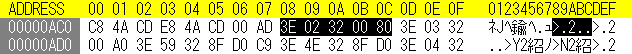
これを似非RAMやエミュレーターで動かすためには、ASCII 8kBタイプのメガコン仕様に変換する必要があります。書き込み（バンク切り替え）は6000h, 8000h, A000hにしているようですが、ASCII 8kBの場合はそれぞれ6800-6FFFh, 7000-77FFh, 7800-7FFFhがバンクレジスタオンアドレスですので、32 00 60を32 00 68に、32 00 80を32 00 70に、32 00 A0を32 00 78に書き換えます。バンク番号はそのままで大丈夫です。
順を追っていけば簡単に理解出来ると思います。もし、手元に韓国ROMがあったらやってみたらいかがでしょうか。基板を見なくても32 00でサーチすれば分かる人には分かるかも知れませんね。ただし、エミュレーターによっては正しくROMタイプ（8kB or 16kBバンク）を指定しないと起動出来ませんのでご注意ください。
お約束ですが、この噂を見て改造などを行い故障やその他問題が発生しても責任は負えません。各自の責任において情報を広く集めて行うことをおすすめします。